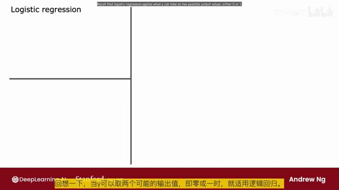
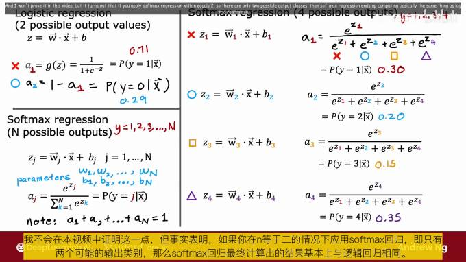
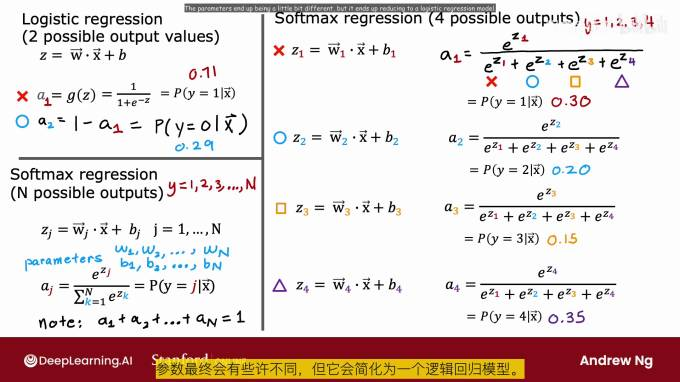
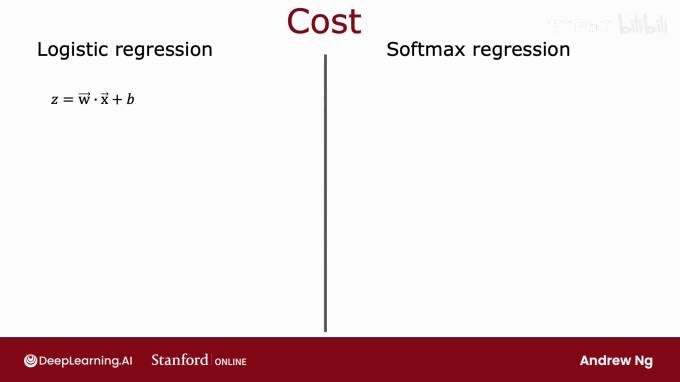
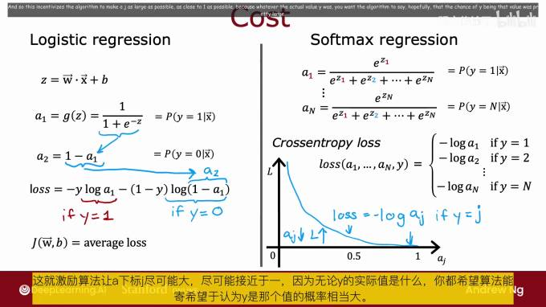
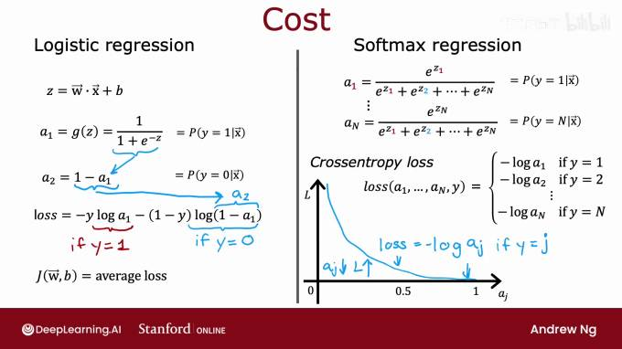

00:02softmax 回归算法是逻辑回归（一种二分类算法）在多分类场景下的推广。
00:14我们来看看它是如何工作的。
00:17回想一下，当 y 可以取两个可能的输出值，即零或一时，就适用逻辑回归。

00:27它计算输出的方式是，先计算 z 等于 w 与 x 的点积再加上 b，然后计算我这里要称之为 a 等于 g(z)的值，也就是应用于 z 的 S 型函数。
00:44我们将其解释为逻辑回归对给定输入特征 x 下 y 等于一的概率估计。
00:55现在，来一道快速测试题。
00:58如果 y 等于一的概率是零点七一，那么 y 等于零的概率是多少？
01:10嗯，y 为一的概率和 y 为零的概率，两者相加必须等于一，对吧？
01:19所以如果它有百分之七十一的概率为一，那么它就有百分之二十九或者零点二九的概率为零。
01:30为了稍微丰富一下逻辑回归，以便为推广到 softmax 回归做准备，我将把逻辑回归看作实际上是在计算两个数值。
01:42首先，a 一，这是我们之前有的那个量，即在给定 x 下 y 等于一的概率。
01:52其次，我将认为逻辑回归也在计算 a 二，即一减去这个值。
02:01也就是在给定输入特征 x 下 y 等于零的概率。
02:07所以 a 一和 a 二当然相加必须等于一。
02:12现在让我们将其推广到 softmax 回归。
02:17我将用一个 y 可以取四个可能输出值的具体例子来说明。
02:24所以 y 可以取值一、二、三或四。
02:32它将计算 z 一等于 w 一与 x 的点积加上 b 一，然后 z 二等于 w 二与 x 的点积加上 b 二，z 三和 z 四以此类推。
02:46这里,W、W、w 四，以及 b 一、b 二、b 三、b 四，都是 softmax 回归的参数。
02:57接下来，这是 softmax 回归的公式。
03:02我们将计算 a 一等于 e 的 z 一次方。
03:07除以 e 的 z 一次方加上 e 的 z 二次方加上 e 的 z 三次方加上 e 的 z 四次方。
03:14而 a 一将被解释为模型对给定输入特征 x 下 y 等于一的概率估计。
03:23接着，softmax 回归的公式将计算 a 二等于 e 的 z 二次方除以相同的分母，即 e 的 z 一次方加上 e 的 z 二次方加上 e 的 z 三次方加上 e 的 z 四次方。
03:41我们将 a 二解释为模型对给定输入特征 x 下 y 等于二的概率估计。
03:49a 三同理，这里分子变成了 e 的 z 三次方除以相同的分母。
03:58类似地，a 四取这个表达式。
04:03而左边，我们写下了逻辑回归模型的规格说明。
04:10右边这些等式则是我们对 softmax 回归模型的规格说明。
04:16它拥有参数 w 一到 w 四以及 b 一到 b 四。
04:22如果你能为所有这些参数学到合适的取值，那么这就为你提供了一种方法，用来预测给定一组输入特征 x 时，y 分别为一、二、三或四的概率。N。
04:37快速测试，假设你对一组新的输入 x 运行 softmax 回归，发现 a 一是零点三零，a 二是零点二零，a 三是零点一五。
04:54为什么不看看这道题，看你能不能找出正确答案呢？
05:01你可能已经意识到，因为 y 取值为一、二、三或四的概率，它们相加必须等于一，所以 a 四，即 y 等于四的概率，必须是零点三五，即一减去零点三减去零点二减去零点一五。
05:21所以我在这里写下了 softmax 回归在四种可能输出情况下的公式。
05:28现在让我们写下一般情况下的 softmax 回归公式。
05:34在一般情况下，y 可以取 n 个可能的值。
05:39所以 y 可以是一、二、三，一直到 n。
05:45在这种情况下，softmax 回归将计算 z 下标 j 等于 w 下标 j 与 x 的点积加上 b 下标 j。
05:57此时 softmax 回归的参数是 w 一、w 二一直到 w 下标 n，以及 b 一、b 二一直到 b 下标 n。
06:10最后，我们将计算 a 下标 j 等于 e 的 z 下标 j 次方除以从 k 等于一到 n 的求和，对 e。
06:24这里我用另一个变量 k 来索引求和，因为这里的 j 指的是一个特定的固定数字，比如等于一。
06:35a 下标 j 被解释为模型对给定输入特征 x 下 y 等于 j 的估计概率。
06:43并且注意，根据这个公式的构造，如果你把 a 一、a 二一直到 a 下标 n 全部加起来的，这些数字最终总是。
06:54这样我们就说明了如何计算 softmax 回归模型。
06:59我不会在本视频中证明这一点，但事实表明，如果你在 n 等于二的情况下应用 softmax 回归，即只有两个可能的输出类别，那么 softmax 回归最终计算出的结果基本上与逻辑回归相同。

07:18参数最终会有些许不同，但它会简化为一个逻辑回归模型。

07:24但这就是为什么 softmax 回归模型是逻辑回归的推广。

07:29定义了 softmax 回归如何计算其输出之后，我们现在来看看如何为 softmax 回归指定代价函数。
07:40回想一下逻辑回归，这是我们之前的内容。
07:44我们说过 z 等于这个，然后我之前写过 a 一即 g(z)，被解释为 y 等于一的概率。
07:54我们也写过 a 二是 y 等于类别零的概率。
08:01所以之前，我们曾将逻辑回归的损失写为负 y 乘以 log a 一减去一再减 y 乘以 log 一再减 a。
08:13但一减 a 一也等于 a 二，因为根据这里的表达式，a 二就是一减 a 一。
08:25所以我可以稍微重写或简化逻辑回归的损失为负 y 乘以一减去一减 y 乘以 log a 二。
08:37换句话说，如果 y 等于一，损失就是负 log a 一。
08:45如果 y 等于零，那么损失就是负 log a 二。
08:52然后和之前一样，模型中所有参数的代价函数是在整个训练集上计算的平均损失。
09:04让我们写下通常用于 softmax 回归的代价函数。
09:11回想一下这些是我们用于 softmax 回归的方程式。
09:16我们将要用于 softmax 回归的损失就是这个。
09:21百算法输出 a 一到 a 下标 n。
09:29且真实标签为 y 时，如果 y 等于一，损失就是负 log a 一。
09:37也就是它认为 y 等于一的概率的负对数。
09:43或者如果 y 等于二，那么我将定义的损失，定义为负 log a 二。
09:50所以等于二时，算法在这个样本上的损失就是它认为 y 等于二的概率的负对数。
10:00以此类推，一直到如果 y 等于 n，那么损失就是 a 下标 n 的负对数。
10:08为了说明这起到了什么作用，如果 y 等于，那么损失就是 a 下标的负对数。
10:22a 下标的负对数是一条看起来像这样的曲线。
10:27所以如果 a 下标非常接近于一，那么你就会处于曲线的这一部分，损失会非常小。
10:35但如果它认为，比方说，a 下标只有百分之五十的概率，那么损失就会变大一点。
10:43并且 a 下标越小，损失就越大。
10:48这就激励算法让 a 下标 j 尽可能大，尽可能接近于一，因为无论 y 的实际值是什么，你都希望算法能寄希望于认为 y 是那个值的概率相当大。


11:04注意，在这个损失函数中，每个训练样本中的 y 只能取一个值。
11:12所以你最终只为 a 下标 j 的一个值计算这个负对数，该值对应的是在那个特定训练样本中 y 等于 j 的实。
11:24例如，如果 y 等于二，你最终计算的是 a 二的负对数，而不会计算 a 一的负对数或这里的其他任何项。
11:34以上就是 softmax 回归的模型形式以及代价函数。
11:40如果你要训练这个模型，你就可以开始构建多类别分类算法。我们接下来要做的是，将这个 softmax 回归模型整合到一个神经网络中，这样我们就能真正做出更棒的事情，也就是训练一个用于多类分类的神经网络。